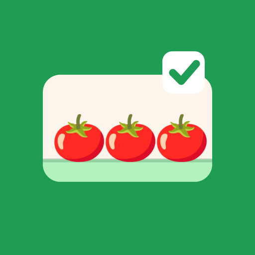

PickyList alışveriş listesi uygulamasının market rafı bulmaca oyunu. Raflarda aynı üç ürünü bir araya getir, alışveriş listeni süre bitmeden tamamla.
Soru, öneri ya da sorun için: oguz.kamburoglu@gmail.com
Satın almam görünmüyor: Oyunda Mağaza › "Satın alımları geri yükle"ye dokun.
Reklam gelmiyor: İnternet bağlantını kontrol et, birkaç dakika sonra tekrar dene.
The supermarket shelf puzzle from PickyList, the shopping list app. Match three of the same product and finish your shopping list before time runs out.
Download free on the App Store
Questions or problems: oguz.kamburoglu@gmail.com
A purchase is missing: open Shop › "Restore purchases" in the game.
No ad loads: check your connection and try again in a few minutes.